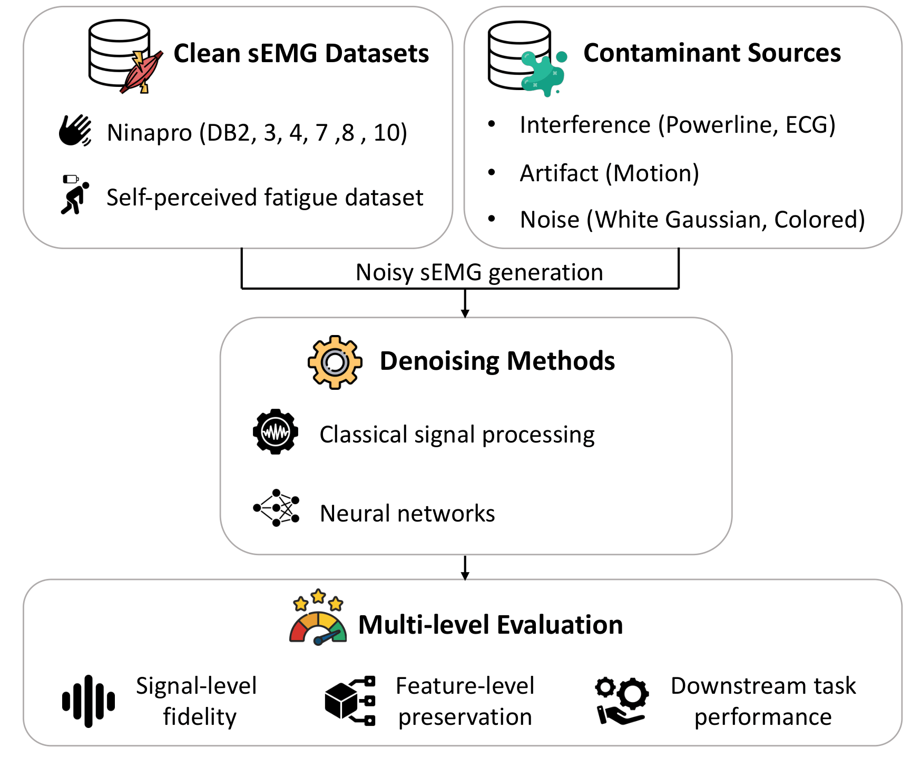

CLEANSEMG:A Benchmark for Single-Channel Surface Electromyography Denoising Algorithms
A unified benchmark for evaluating sEMG denoising algorithms across signal reconstruction,
physiological feature preservation, and downstream task utility.
Bio-ASP Lab, Institute of Information Science, Academia Sinica
Surface electromyography (sEMG) is central to prosthetic control, rehabilitation, human–computer
interaction, and physiological monitoring, but recorded signals are highly susceptible to noise,
interference, and motion-related artifacts. Existing sEMG denoising studies are typically evaluated
under heterogeneous datasets, noise settings, and metric choices, which makes direct comparison difficult.
CLEANSEMG addresses this gap by providing a standardized and reproducible benchmark for
single-channel sEMG denoising. The benchmark integrates public sEMG datasets, controlled contaminant
generation, representative classical and neural denoisers, and a multi-level evaluation protocol that
jointly assesses waveform reconstruction, feature-level preservation, and downstream task performance.

Place your overview image here as figs/Fig1_overall_structure.png.
If your current file is PDF, export Fig1_overall_structure.pdf to PNG for reliable web display.
Figure 1. CLEANSEMG constructs clean sEMG references, injects controlled contaminants, applies representative denoisers, and evaluates performance at signal, feature, and downstream-task levels.
Benchmark Design
From waveform recovery to application-level evaluation
CLEANSEMG is designed around a central observation: a denoiser with strong signal-level scores does not
necessarily preserve the structures used by downstream sEMG systems. The benchmark therefore separates
denoising utility into three complementary axes.
Axis I
Signal reconstruction
SNR improvement, RMSE, PRD, and LSD measure whether the denoised signal is closer to the clean reference in time and spectral domains.
Axis II
Feature preservation
ARV, ZCR, MNF, MDF, and kurtosis errors test whether denoising preserves physiologically meaningful sEMG descriptors.
01Clean corpusQuality-controlled sEMG segments from public datasets.
02ContaminationControlled mixing with PLI, ECG, MOA, WGN, and CLN.
03DenoisingClassical and neural methods under a unified protocol.
04MetricsSignal-level and feature-level reconstruction errors.
05TasksGesture recognition and self-perceived fatigue classification.
Data
Datasets and contaminant sources
The benchmark uses public sEMG corpora for clean-reference construction and held-out downstream evaluation.
It also defines a contaminant library covering structured interference, physiological interference,
movement-related artifacts, and stochastic noise.
Primary sEMG corpus
Ninapro DB2, DB3, DB4, DB7, DB8, and DB10
Ninapro provides diverse acquisition settings, subject groups, electrode configurations, and gesture protocols.
In CLEANSEMG, DB3, DB4, DB7, DB8, and DB10 form the training pool, while DB2 is used as a held-out gesture-recognition test pool.
DB2: held-out test pool for gesture recognition.
DB3/DB4/DB7/DB8/DB10: training pool for neural denoisers.
Subsets with insufficient sampling rate or non-comparable protocol are excluded.
Dynamic upper-limb sEMG recordings with three-level self-perceived fatigue annotations. This dataset is used to test whether denoising improves fatigue classification.
13 participants; approximately 13 h 20 min of recordings.
CLEANSEMG evaluates denoisers under five contaminant categories. PLI, WGN, and CLN are simulated; ECG and motion artifacts are taken from real-world recordings.
ECG: MIT-BIH Normal Sinus Rhythm Database.
MOA: MIT-BIH Noise Stress Test Database and Ninapro-style motion artifact data.
Controlled paired contamination and unified evaluation
CLEANSEMG first constructs clean sEMG references through quality-aware trial selection. Noisy inputs are then generated by injecting one or more contaminant signals at controlled SNRs. This paired design allows all signal-level and feature-level metrics to be computed against a known clean reference.
Noise mixing rule
y = c + Σi=1k αi ni,
αi = √( ||c||22 / ( k ||ni||22 ) · 10-η/10 )
Here, c is the clean sEMG segment, ni is the i-th contaminant, k is the number of contaminant types, and η is the target SNR in dB.
Classical baselines
Signal-processing denoisers
Classical baselines provide interpretable reference points for fixed filtering and decomposition-based denoising.
High-pass IIR filtering
Empirical mode decomposition
Complete ensemble EMD with adaptive noise
Variational mode decomposition
Neural baselines
Learning-based denoisers
Neural denoisers are trained under the same corpus, online mixing strategy, optimizer family, and epoch budget.
FCN
SDEMG
MSEMG
TrustEMG-Net
Experiments
Main results
The table summarizes overall denoising performance across signal reconstruction, feature preservation,
and downstream utility. Higher is better for SNRimp, accuracy, and F1; lower is better for RMSE, PRD, LSD,
and feature reconstruction errors.
Method
Signal reconstruction
Feature preservation
Downstream utility
SNRimp (dB) ↑
RMSE (10-5) ↓
PRD (%) ↓
LSD (dB) ↓
RMSE-ARV (10-5) ↓
RMSE-ZCR (s-1) ↓
RMSE-MNF (Hz) ↓
RMSE-MDF (Hz) ↓
RMSE-Kurt. ↓
Gesture Acc. (%) ↑
Gesture F1 (%) ↑
Fatigue Acc. (%) ↑
Fatigue F1 (%) ↑
HP
1.27
5.44
121.80
0.662
2.69
83.64
32.78
40.48
2.59
65.82
61.60
42.78
39.49
EMD
0.34
5.45
119.58
0.593
2.68
107.91
31.90
44.38
7.31
62.24
57.60
40.93
34.93
CEEMDAN
0.46
5.30
116.57
0.581
2.50
98.47
32.63
46.33
4.25
61.12
57.80
40.89
39.75
VMD
0.31
10.00
120.02
0.624
5.42
98.48
36.97
64.16
3.16
62.73
59.24
38.94
34.93
FCN
6.95
2.41
54.07
0.224
0.75
47.59
16.92
25.17
3.23
67.24
63.81
61.60
61.70
SDEMG
5.69
2.94
65.95
0.272
0.80
51.09
16.58
28.31
2.96
68.46
66.11
57.55
57.68
MSEMG
7.24
2.41
53.91
0.230
0.78
45.82
14.88
25.05
3.30
68.04
65.31
58.84
58.94
TrustEMG-Net
7.72
2.27
50.72
0.213
0.74
47.87
16.15
25.16
2.96
68.52
65.59
60.05
60.22
Bold marks the best value per metric. Results are macro-averaged under the benchmark protocol.
Signal-level ranking is not the whole story
TrustEMG-Net is strongest on most reconstruction metrics, but MSEMG better preserves several frequency-related descriptors. This supports the benchmark's multi-axis design.
Downstream recovery remains incomplete
Denoising improves task performance relative to noisy inputs, yet the clean-reference gap remains. This is especially relevant for severe contamination and task-specific sEMG patterns.
Place your SNR robustness plot here as figs/fig2_snr.png.
Figure 2. Performance as a function of input SNR. The stratified view is useful for detecting low-SNR failure modes that are hidden by aggregate averages.
Key Findings
What CLEANSEMG reveals
Finding 01
Neural denoisers outperform classical baselines
Across most reconstruction and feature-preservation metrics, neural methods substantially improve over fixed filtering and decomposition-based denoising.
Finding 02
Reconstruction and feature preservation diverge
A model can achieve strong waveform recovery while still altering zero-crossing or frequency descriptors used by downstream sEMG analysis.
Finding 03
Downstream performance is task dependent
Gesture recognition and fatigue classification rank denoisers differently, indicating that application-level evaluation is necessary.
Scope
Limitations and future extensions
CLEANSEMG is intended as an extensible benchmark. The current release emphasizes controlled, reproducible,
paired evaluation, but several practical dimensions remain open for future benchmark iterations.
Controlled paired contamination
Synthetic mixing enables clean-reference metrics, but cannot fully reproduce all real-world artifact mechanisms such as sweat-induced impedance changes or electrode displacement.
Quality-control dependence
The clean corpus depends on QC thresholds inherited from prior sEMG signal-quality protocols. Future sensitivity analysis should test how thresholds affect ranking.
Single-channel scope
The benchmark isolates temporal denoising ability but does not yet exploit spatial correlations across multi-electrode or high-density sEMG recordings.
Deployment metrics not yet primary
Runtime, model size, memory usage, and latency should be added for wearable, embedded, and real-time sEMG systems.
Reference
Related work and citation
The project citation should be added after formal publication. Until then, related work is organized by dataset, denoising model, and downstream-task reference.